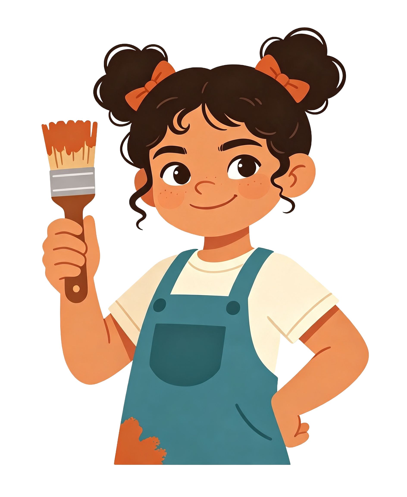
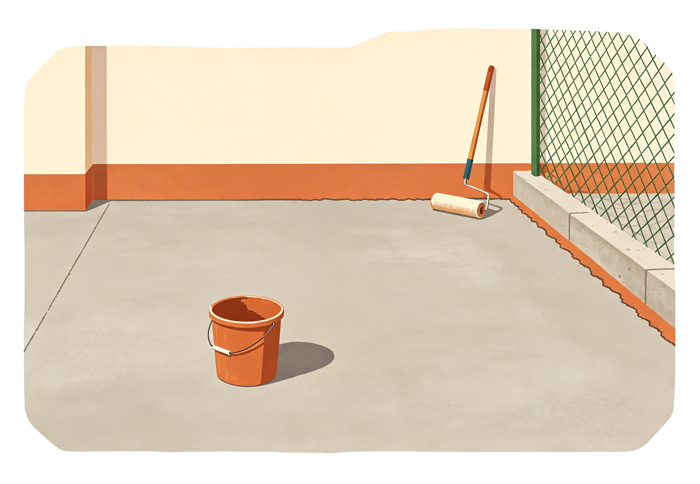
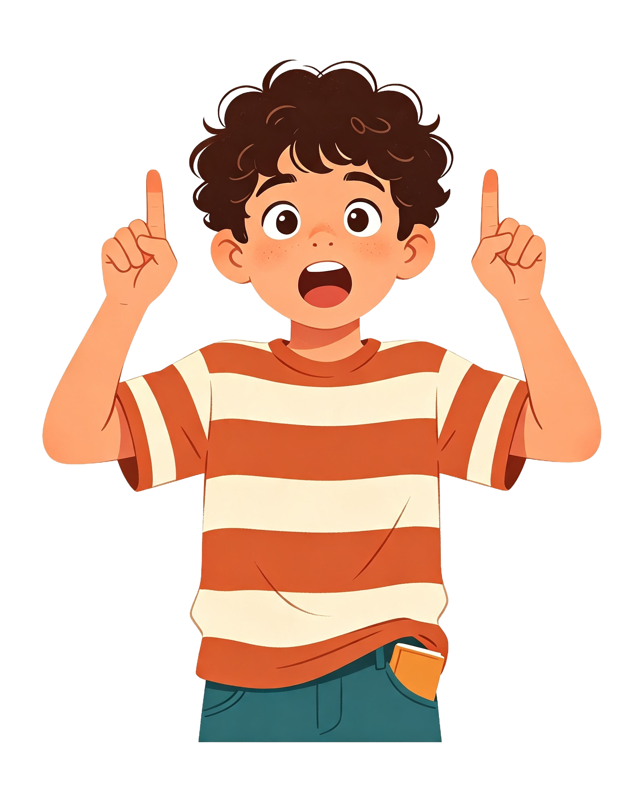

Exploración inicial
El patio sin marcas
Ayer el patio era gris. Hoy amaneció pintado de nuevo… y el trúcamelo desapareció. Yeraldi junta su brigada antes del recreo.

Toca las tres viñetas para saber qué pasó en el patio.

Toca una sola vez cada casilla que quedó. Di el número en voz alta.
Llevas contadas: 0
Arrastra cada ficha a su casilla. Del 1 al 6, en su orden.
Solo uno de estos trúcamelos se puede jugar. ¿Cuál?

Elián cantó así. Toca el número que se adelantó.
Faltan tres macetas en la galería. Arrastra cada una a su sitio exacto.
Macetas sueltas
Mueve la brocha. Párala donde el que sigue sea el 14.
Debajo de la brocha: 1 · El que sigue: 2
Yeraldi dice: «Si empiezo a contar por el 7, después va el 8».
Une cada número con el que le sigue: arrástralo encima.
Parejas unidas: 0 de 4
Cuatro cintas cumplen la misma regla. Una no. Toca esa.
La pintura tapó cuatro casillas. Raspa con el dedo hasta destapar cada número.
Toca el que sigue antes de que se apague. Cuatro aciertos y listo.
La chata cayó en el — · Aciertos: 0 de 4
Sin contar: ¿cuántas casillas caben en el patio largo? Apuesta primero.
Mi apuesta: 12 casillas

Estos cuatro se pintaron cambiados. Arrastra uno encima de otro para intercambiarlos.
Cambios hechos: 0
Ensayo general: toca el trúcamelo en orden, del 1 al 10. La que late es la que toca.
Exploración completada
El patio ya casi habla
Contaste, ordenaste y descubriste al que se adelanta. Pero pintar es otra cosa: hay que hacerlo sin equivocarse ni una vez.
¿Cómo pintamos el trúcamelo sin que se nos escape ni un número?